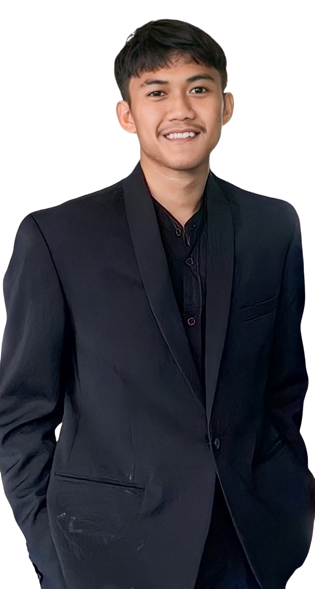
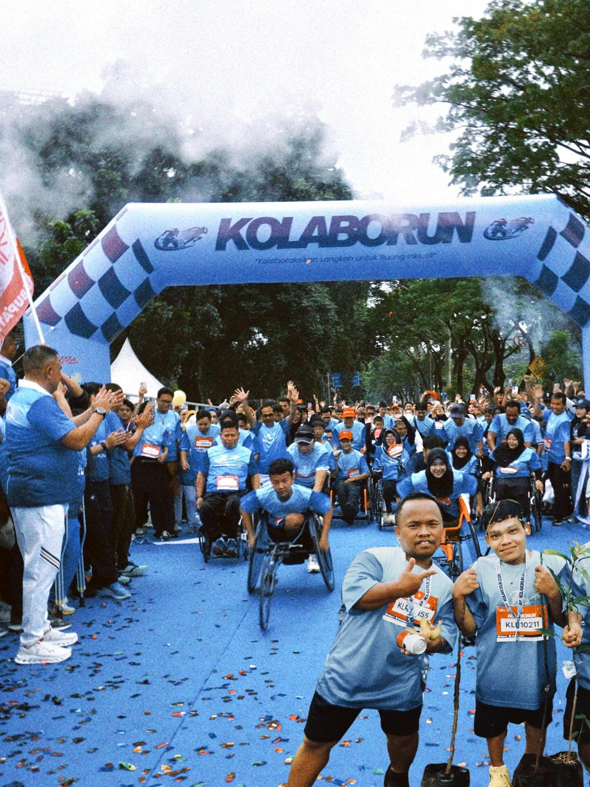
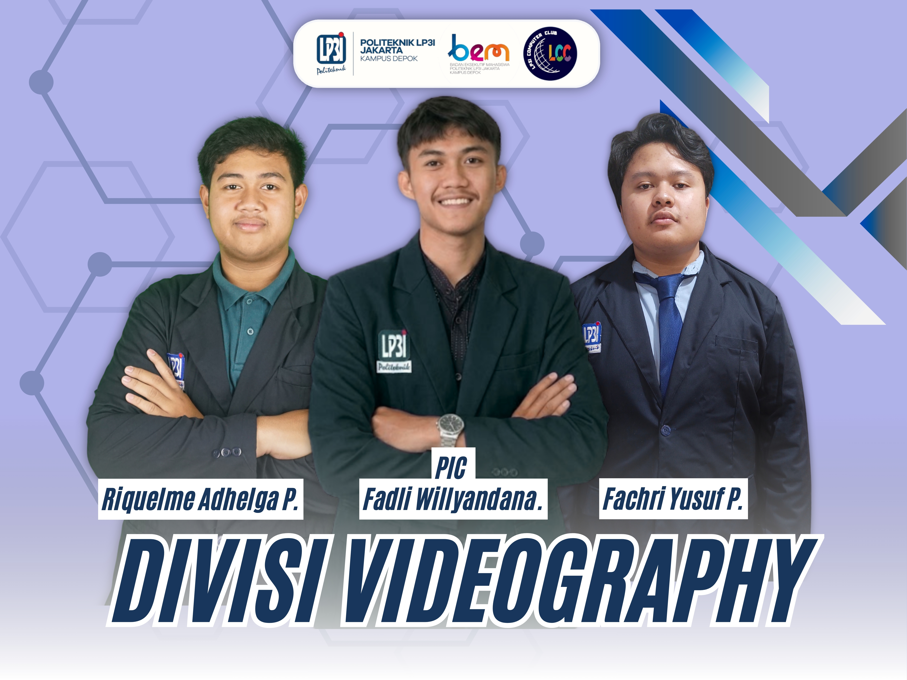
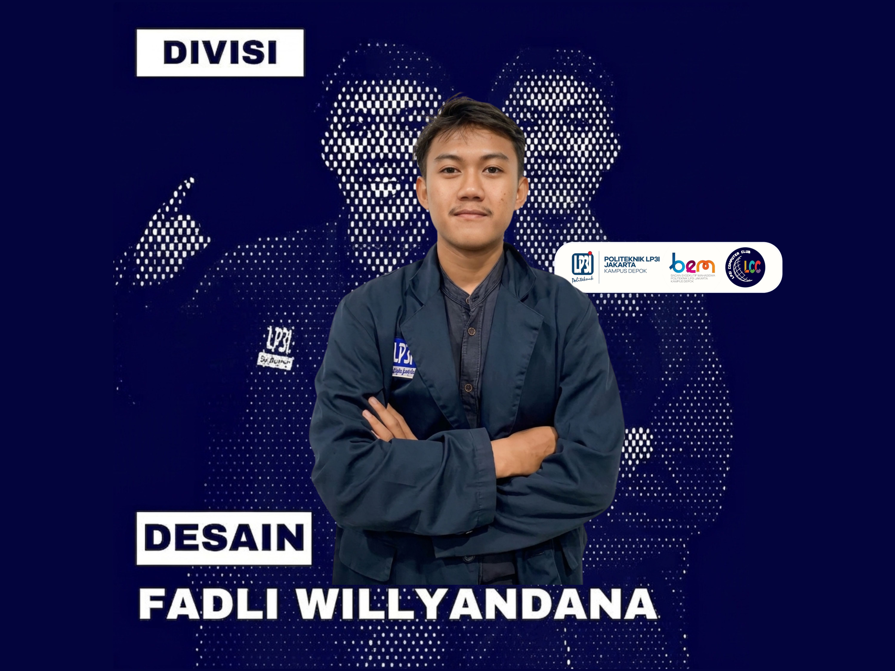

"Halo, saya Fadli Willyandana. Saya fokus membangun Web Aplikasi yang efisien dan terstruktur dari perancangan sistem dan Database, pengembangan Backend, hingga tampilan Frontend yang responsif."




HTML, CSS, JavaScript, PHP, CodeIgniter 4, React.js, Node.js, Express.js
MySQL, Supabase, Database Management, Data Analysis, Data Mining & Processing
GitHub, VS Code, Ms. Excel, Ms. Word
Aplikasi analisis data mining menggunakan Algoritma C4.5 (Decision Tree) untuk memprediksi dan menganalisis pola keputusan penjualan iPhone.
Sistem pengajuan klaim medis berbasis web dengan alur multi-level approval untuk Pegawai, HRD, dan Finance.
Deskripsi singkat mengenai proyek yang dikembangkan, fitur utama, serta teknologi yang digunakan.